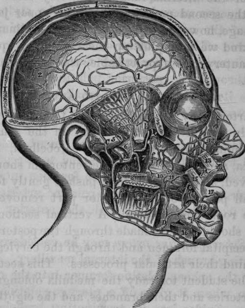

The Spheno Palatine Artery
Description
This section is from the book "Anatomy Of The Arteries Of The Human Body", by John Hatch Power. Also available from Amazon: Anatomy of the Arteries of the Human Body, with the Descriptive Anatomy of the Heart.
The Spheno Palatine Artery
The Spheno Palatine Artery may be considered as the terminating branch of the internal maxillary. It passes through the spheno-palatine foramen into the cavity of the nose, where it gives off a pterygo-palatine branch, and then divides into its terminating branches. The pterygopalatine branch sometimes comes off directly from the internal maxillary; it passes backwards from its origin through the pterygopalatine canal and supplies the pharynx and Eustachian tube. The terminating branches of the spheno-palatine are two or more in number: one of them descends on the septum nasi, with the spheno-palatine nerve, and communicates with the superior palatine artery: the others are distributed in the superior and middle meatus, in the antrum, and in the posterior ethmoidal cells: they communicate with the ethmoidal arteries, and form between the mucous membrane and periosteum, a vascular network, deeply tinging the former membrane.
Fig. 15. Dissection of the Internal Maxillary, Middle Meningeal, and part of the course of the Facial, Arteries.
A, External Carotid Artery. B, B, Internal Maxillary Artery. C, C, Superficial Temporal Artery. D, Facial Artery. I, I, I, Vertical section through Frontal, Parietal, and Occipital Bones. K, Middle Meningeal Artery. P, Mental branch of Inferior Dental Artery, a, Branch to the Masseter Muscle, b. Branch to Parotid Gland. c, Posterior Auris Artery, d, A twig from the Internal Maxillary to Internal Pterygoid Muscle, e, Inferior Dental Artery proceeding to the Dental Canal of the lower jaw. f, Buccal Artery, g. Posterior Superior Dental Artery, h, Anterior deep Temporal Artery, i. Posterior deep Temporal Artery. 1, 1, 1, Distribution of the Middle Meningeal Artery after having entered the Cranium through the Spinous Foramen of the Sphenoid Bone. m. Artery of the Filtrum. n, Branch of Temporal Artery, o, Facial Artery ascending to upper lip and nose. 2,2, 2, Continuation of Middle Meningeal ramifying beneath the Dura Mater. 3, Temporal Fossa. 4, 4, Orbicularis Palpebrarum Muscle. 5, 5, Zygomatic Arch cut through. 6, External Pterygoid Muscle cut across. 7, Internal Pterygoid Muscle. 8, Ramus of the lower jaw cut. 9, Masseter Muscle cut. 10, Buccinator. 11. Parotid Duct cut across. 12, Levator Labii Superioris Alaeque Nasi. 13, Portion of Levator of the upper Lip. 14, Part of Zygomaticus Minor. 15, Part of Zygomaticus Major. 16,16, Depressor Labii Inferioris cut across. 17, Orbicularis Oris Muscle. 18, 18, Quadratus Menti Muscle divided.
Sir B. Brodie tied the common carotid in consequence of hemorrhage from the posterior superior dental branch of the internal maxillary artery after extraction of the second molar tooth of the upper jaw; the hemorrhage, however, proved fatal.* In ordinary cases of this kind we may plug up the socket, or apply the actual cautery, or, if practicable, the tooth should be replaced.
Continue to: